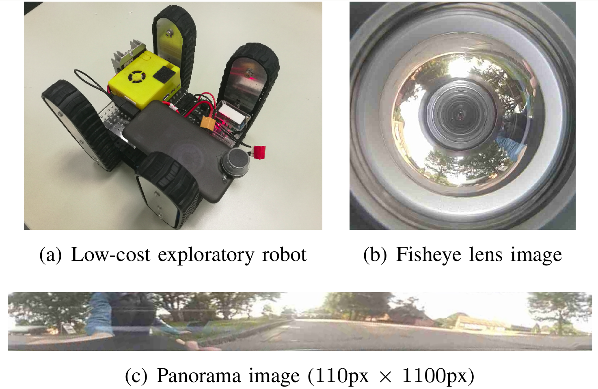

About Me
I am currently a third-year Master's student in Computer Science at ShanghaiTech University.
I am interested in Computer Vision (depth estimation and semantic segmentation), Robotics and SLAM (visual odometry and 3D reconstruction).
Before joining ShanghaiTech University, I got my bachelor degree from Hefei University of Technology with highest honor.
My resume can be downloaded [here].
I’m looking for PhD positions starting Spring 2021. Please contact me if you are interested in hiring me. Many thanks!
Education
-

September 2017 - Present
ShanghaiTech UniversityComputer Science - Master of Science (MS)
Shanghai - China
- Member of Mobile Autonomous Robitic Systems Lab
- Research Interests: Computer Vision, Deep Learning and SLAM
- First Prize Scholarship of ShanghaiTech University
-
September 2013 - June 2017
Hefei University of TechnologyComputer Science and Technology - Bachelor of Engineering (BE)
XuanCheng, Anhui - China
- Team leader of 2D Simulation League Team of HfutEngine Group
- Undergraduate Thesis with Prof.Baofu Fang in 2D SLAM and Navigation in Indoor Environments.
- First Prize Scholarship of HeFei University of Technology
Work Experience
-

November 2019 - Present
Research InternAmazon Shanghai AI Lab Shanghai - China
- Establishing semantic segmentation and depth estimation model to Amazon GluonCV library
- Trying to speed up the model via replacing existing model to a lightweight network for the low cost devices
-
June 2016 - September 2016
Visiting StudentShenzhen Institutes of Advanced Technology, Chinese Academy of Sciences, Shenzhen - China
- Worked in Laboratory for Medical Imaging and Digital Surgery with Prof. JIA Fucang on 3D Reconstruction of Binocular Endoscopic Images.
Projects
-
Robot Pose Estimation for Omni-directional Cameras
Haofei Kuang, Qingwen Xu, Xiaoling Long and Sören Schwertfeger
- Extracted motion of pixels between two frames via improved Fourier-Mellin invariant (iFMI) algorithm.
- Estimated the full 6 DoF 3D transform, up to an unknown scale factor via fitting the motion of the pixels in the panoramic images to two sinusoidal functions.
-
Depth Estimation by using Deep Neural Network
Haofei Kuang, Qingwen Xu and Sören Schwertfeger
- Established a Deep Fully Convolutional Residual Network for predicting a full resolution depth map from a single monocular image.
- Developed a spherical convolution to deal with distortion problems of panoramic images.
-
 Image Registration via Fourier-Mellin transform (FMT) Algorithm
Image Registration via Fourier-Mellin transform (FMT) Algorithm
Haofei Kuang and Qingwen Xu
- Course Project of CS270 Digital Image Processing
- Solved 2D image registration problem between two related images via FMT algorithm.
- Implemented FMT algorithm with omnidirectional camera model to found the correspondences between two continue frames.
-
Image Registration by using Gauss-Newton Method
Haofei Kuang
- Course Project of SI211 Numerical Analysis
- Formulated 2D image registation problem as a least-squared problem and written the objective function.
- Solved a image registration problem by using Gauss-Newton method.
-
Full-Speed Indoor Navigation with Jackal Robot
Haofei Kuang, Wang Lei, Li Ziyue and Zeng Xiangchen
- Course Project of CS283 Robotics
- Mounted a Velodyne VLP-16 laser scanner on Jackal robot for the environmental perception.
- Implemented the PID controller with Jackal robot to solve a indoor local navigation task.
Publications
-
IROS'19Pose Estimation for Omni-directional Cameras using Sinusoid Fitting
Haofei Kuang, Qingwen Xu, Xiaoling Long and Sören Schwertfeger
[pdf] -
ROBIO'19
-
Workshop on Underwater Robotics Perception, ICRA'19Depth Estimation on Underwater Omni-directional Images Using a Deep Neural Network
Haofei Kuang, Qingwen Xu and Sören Schwertfeger
[pdf] [poster] [best paper award]